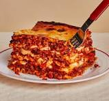

LASAGNA

Description
Can I tell you what makes this Italian lasagna recipe so special? It’s the easy béchamel sauce (just a fancy name for a white sauce made from flour, butter and milk), that makes it SO much tastier and more authentic (at least in Northern Italy), than using ricotta. I’m convinced it’s the best way to make homemade lasagna! I always double the recipe when making lasagna, so I can freeze a second pan for another day, or give the meal to a friend with homemade breadsticks and a salad.
Ingredients
- Meat: This super meaty lasagna has sweet Italian sausage and lean ground beef.
- Onion and garlic: An onion and two cloves of garlic are cooked with the meat to add tons of flavor.
- Tomato products: You'll need a can of crushed tomatoes, two cans of tomato sauce, and two cans of tomato paste.
- Sugar: Two tablespoons of white sugar add subtle sweetness and enhance the flavor of the sauce.
- Spices and seasonings: This lasagna recipe is flavored with fresh parsley, dried basil leaves, salt, Italian seasoning, fennel seeds, and black pepper.
- Lasagna noodles: Use store-bought or homemade lasagna noodles.
- Cheeses: Parmesan, mozzarella, and ricotta cheese make this lasagna extra decadent.
- Egg: An egg helps bind the ricotta so it doesn't ooze out of the lasagna when you cut into it.